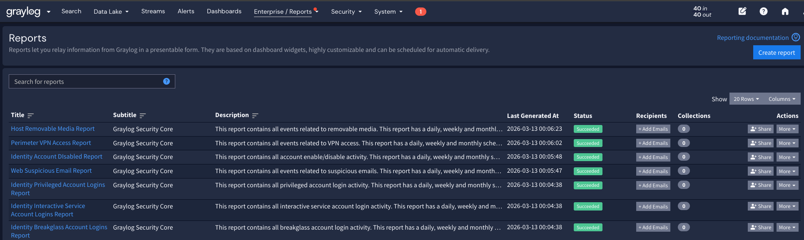
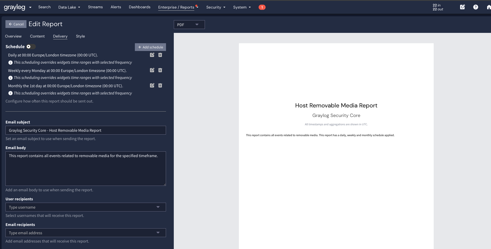

Reports packaged in Graylog Security Core can be run on demand with a default timeframe of 24 hours or scheduled to suit your needs. On the Enterprise > Reports page, you will see many reports that are prefixed by the attack surface the content covers.

All reports have a Subtitle of "Graylog Security Core". To adjust the schedule or add an email recipient to a report, click the "+ Add Emails" button. On this page you will see the default daily, weekly, and monthly schedules applied. Turning on the schedule will enable automated running of the report, which is stored on the platform by default. If you wish to send the report to a user by email when it is completed, you can enter a Graylog user or an email address.
Warning: You must configure email settings in the Graylog server configuration file to successfully send emails.
